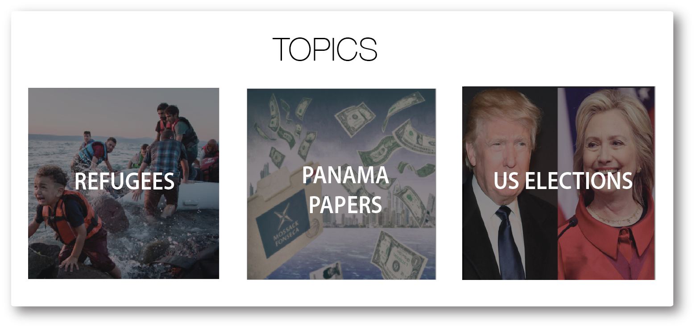
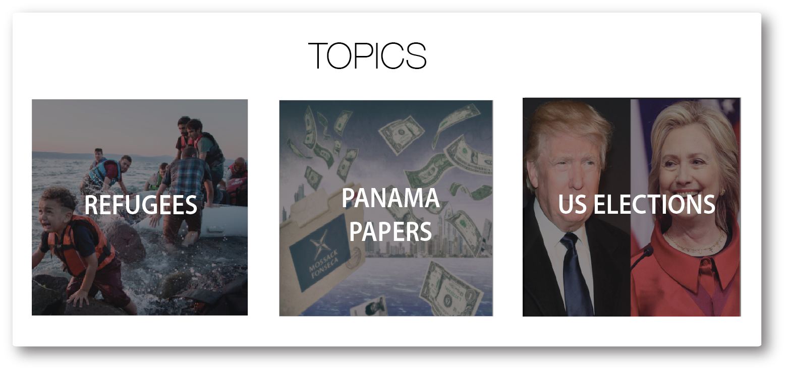

Facebook is changing its algorithm yet again, and this time it wants to show you more things that you’ll actually spend time reading or watching.
The social network looks at a wealth of data when deciding which posts you actually see on News Feed, but until now it hasn’t cared too much about what you actually do when you click away from Facebook. It says that’s going to change.
“We’re learning that the time people choose to spend reading or watching content they clicked on from News Feed is an important signal that the story was interesting to them,” said software engineer Moshe Blank and research scientist Jie Xu in a post on the company’s website.


 
